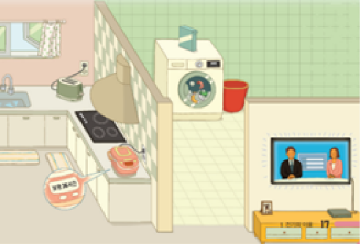

1번
다음은 전기를 낭비하고 있는 친구에게 쓴 편지입니다. 밑줄 친 부분 중 전기를 절약하는 방법으로 옳지 않은 것은?

친구야, 안녕? 전기를 낭비하는 모습이 안타깝구나.
토스터를 사용하지 않을 때에는 플러그를 뽑아둬야해.
세탁물의 양이 적어야 세탁이 잘 되니 적은 양으로 자주 세탁해주는 게 좋아.
밥은 먹을 만큼만 하 남 밥은 식힌 후에 냉동실에 얼리면
전기를 절약할 수 있어.
TV를 보지 않을 때는 전원을 끄고 플러그를 뽑아둬야 해.
마지막으로,
창문을 닫고 에어컨을 사용해야
전기를 절약할 수 있어. 친구야, 전기를 낭비하지 않도록 앞으로 노력해보자.